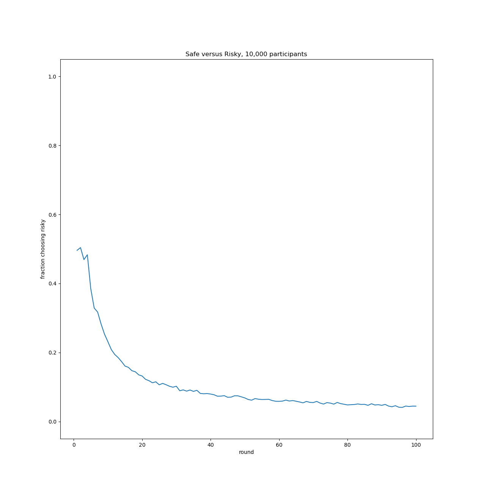
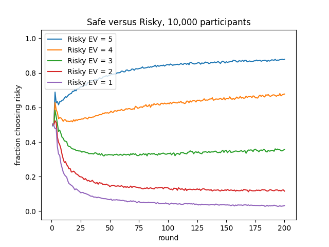

Alhazen version 1.4.0¶
Introduction¶
Alhazen is a small, simple framework to facilitate running experiments, written in Python, using cognitive models, or similar applications, in multiple, parallel processes. It is primarily useful on multi-core machines, though most modern machines are such; the more cores, the more performance benefit you are likely to get by using it. It also depends upon the experiment being structured as a large number of identical, independent runs of the same activity, or of similar activities. This is a common pattern, each such run usually corresponding to a distinct virtual participant, or possibly a collection of interacting participants.
When an Alhazen experiment is run the initial process is used as a parent, controller
process and it spawns one or more child, worker processes to run the individual tasks.
Alhazen handles partitioning the sub-tasks between these workers, and collecting their
results, which can then be aggregated in the parent, controller process. To use Alhazen
you make a subclass of its Experiment or IteratedExperiment class,
override some of its methods to describe what the workers should do and what results to
return and aggregate, declare how many workers to use, and then call its run()
method.
Installing Alhazen¶
Alhazen requires Python version 3.7 or later. Recent versions of Mac OS X and recent Linux distributions
are likely to have a suitable version of Python pre-installed, but it may need to be invoked as python3
instead of just python, which latter often runs a 2.x version of Python instead. Use of a virtual environment,
which is recommended, often obviates the need for the python3/python distinction.
If it is not already installed, Python, for Windows, Mac OS X, Linux, or other Unices, can be
downloaded from python.org, for free.
Normally, assuming you are connected to the internet, to install Alhazen you should simply have to type at the command line
pip install alhazen
Depending upon various possible variations in how Python and your machine are configured you may have to modify the above in various ways
you may need to ensure your virtual environment is activated
you may need use an alternative scheme your Python IDE supports
you may need to call it
pip3instead of simplypipyou may need to precede the call to
pipbysudoyou may need to use some combination of the above
Mailing List¶
There is a mailing list for those interested in Alhazen and its development.
Tutorial¶
As an example we will model a player performing an iterated, binary choice task, where one of the two available choices is “safe,” always earning the player one point, and the other is “risky,” sometimes earning the player ten points, but more frequently zero, but with the probability of the high payoff set to 0.1 so that the expected value of either choice is one point. The player has no a priori knowledge of the game, and learns of it from experience. Some number of virtual participants will perform this task for a fixed number of rounds, learning from their past experiences in earlier rounds. Then we’ll graph the average number of times a participant made the risky choice as a function of the round. In our implementation the simulated participants’ actions will be decided by an Instance Based Learning model, written using PyACTUp.
First we start by making a subclass of the Alhazen
IteratedExperiment class, and override its
run_participant_prepare() method to allocate for each
participant a PyACTUp Memory object. This method will be called
within a worker process, and for this example we will ignore the
participant, condition and context parameters to this method.
from alhazen import IteratedExperiment
import pyactup
class SafeRisky(IteratedExperiment):
def run_participant_prepare(self, participant, condition, context):
self.memory = pyactup.Memory()
We next initialize the PyACTUp Memory and override the
run_participant_run() method to actually implement the cognitive
model. It makes a choice, learns the payoff that that choice produced,
and returns whether or not it made the risky choice, for subsequent
reporting by the parent, control process. This return value must be
picklable.
We learn instances for each of the two possible choices with a prepopulated
instance value of twelve to ensure exploration of both choices.
Again this method is called in a worker process, and we are ignoring
the values of the round, participant, condition and context
parameters.
from alhazen import IteratedExperiment
import pyactup
import random
class SafeRisky(IteratedExperiment):
def run_participant_prepare(self, participant, condition, context):
self.memory = pyactup.Memory()
self.memory.learn(choice="safe", payoff=12, advance=0)
self.memory.learn(choice="risky", payoff=12)
def run_participant_run(self, round, participant, condition, context):
choice, bv = self.memory.best_blend("payoff", ("safe", "risky"), "choice")
if choice == "safe":
payoff = 1
elif random.random() < 0.1:
payoff = 10
else:
payoff = 0
self.memory.learn(choice=choice, payoff=payoff)
return choice == "risky"
This all that is required to be able to run our model in multiple
processes. The IteratedExperiment super-class will handle the partitioning
of participants across worker processes, tell them to run, collect their
results, all while correctly transferring information between the
various processes and safely synchronizing their activities. The collected
results will be available as the value returned by the SafeRisky’s
run() method.
To make use of this we will add a main() function that will
allocate a SafeRisky object, initialized with the desired
number of rounds and participants, call its run() method, and
draw a graph of the results with Matplotlib. This progream takes three
command line arguments to specify the number of participants, number
of rounds and number of worker processes. If these arguments are not
provided explicitly they default to 10,000 participants, 200 rounds,
and as many worker processes as the machine it is running in has
(possibly virtual) cores.
from alhazen import IteratedExperiment
import click
import matplotlib.pyplot as plt
import pyactup
import random
class SafeRisky(IteratedExperiment):
def run_participant_prepare(self, participant, condition, context):
self.memory = pyactup.Memory()
self.memory.learn(choice="safe", payoff=12, advance=0)
self.memory.learn(choice="risky", payoff=12)
def run_participant_run(self, round, participant, condition, context):
choice, bv = self.memory.best_blend("payoff", ("safe", "risky"), "choice")
if choice == "safe":
payoff = 1
elif random.random() < 0.1:
payoff = 10
else:
payoff = 0
self.memory.learn(choice=choice, payoff=payoff)
return choice == "risky"
@click.command()
@click.option("--rounds", default=200, help="the number of rounds each participant plays")
@click.option("--participants", default=10_000, help="the number of participants")
@click.option("--workers", default=0,
help="number of worker processes, zero (the default) means as many as available cores")
def main(rounds=200, participants=10_000, workers=0):
exp = SafeRisky(rounds=rounds,
participants=participants,
process_count=workers)
results = exp.run()
plt.plot(range(1, rounds + 1),
list(sum(r[i] for r in results) / participants
for i in range(rounds)))
plt.xlabel("round")
plt.ylim(-0.05, 1.05)
plt.ylabel("fraction choosing risky")
plt.title(f"Safe versus Risky, {participants:,d} participants")
plt.show()
if __name__== "__main__":
main()
When run with the default command line arguments a graph like the following is displayed. We see that the model has a strong bias against the risky choice, even though it has the same expected value as the safe one.

Using a particular 32 core machine, running this with --workers=1,
to use just a single worker process, it requires one minute and
thirty-nine seconds to run to completion. If instead it is run with
--workers=32, to use 32 worker processes, all able to run in
parallel on the 32 core machine, it completes in only three seconds.
Often we want to run experiments like these with multiple, different
conditions, such as different parameters to the models or to the
tasks. This is facilitated by using the conditions slot of the
IteratedExperiment object, an iterable the elements of which
are passed to the run_participant() method in the worker process.
Note that the total number of participants is the product of
participants and the number of conditions. A condition can be any
Python value that is both hashable and
picklable,
Note that it is easy to run cross products of two or more orthogonal
sets of conditions by using tuples of their elements.
Here we augment the above SafeRisky implementation to use different
probabilities for the risky choice, for different expected values of that
choice. The values we pass as conditions will be numbers, the desired expected
values. At the same time we enable recording the individual choices made at each round by
each participant in a comma separated values (CSV) file, write access to which
is synchronized across the worker processes using the log property.
from alhazen import IteratedExperiment
import click
from itertools import count
import matplotlib.pyplot as plt
import pyactup
import random
EXPECTED_VALUES = [5, 4, 3, 2, 1]
class SafeRisky(IteratedExperiment):
def run_participant_prepare(self, participant, condition, context):
self.memory = pyactup.Memory()
self.memory.learn(choice="safe", payoff=12, advance=0)
self.memory.learn(choice="risky", payoff=12)
def run_participant_run(self, round, participant, condition, context):
choice, bv = self.memory.best_blend("payoff", ("safe", "risky"), "choice")
if choice == "safe":
payoff = 1
elif random.random() < condition / 10:
payoff = 10
else:
payoff = 0
self.memory.learn(choice=choice, payoff=payoff)
self.log([condition, participant, round, choice, payoff])
return choice == "risky"
# Note that if run with the default 10,000 participants and 200 rounds the log file
# will consist of nearly 10 million lines totalling nearly 200 megabytes.
@click.command()
@click.option("--rounds", default=200, help="the number of rounds each participant plays")
@click.option("--participants", default=10_000, help="the number of participants")
@click.option("--workers", default=0,
help="number of worker processes, zero (the default) means as many as available cores")
@click.option("--log", help="a log file to which to write details of the experiment")
def main(rounds=200, participants=10_000, workers=0, log=None):
exp = SafeRisky(rounds=rounds,
conditions=EXPECTED_VALUES,
participants=participants,
process_count=workers,
logfile=log,
csv=True,
fieldnames="expected value,participant,round,choice,payoff".split(","))
results = exp.run()
for c in exp.conditions:
plt.plot(range(1, rounds + 1),
list(sum(r[i] for r in results[c]) / participants
for i in range(rounds)),
label=f"Risky EV = {c}")
plt.legend()
plt.xlabel("round")
plt.ylim(-0.05, 1.05)
plt.ylabel("fraction choosing risky")
plt.title(f"Safe versus Risky, {participants:,d} participants")
plt.show()
if __name__== "__main__":
main()
When run with the default command line arguments, a graph like the following is displayed. We see that the probability of getting the high payoff must be surprisingly high to convince the model to overcome its distaste for risk.

Again on a 32 core machine, running this with --workers=1, it
requires seven minutes and forty-three seconds, but with multiple, parallel worker
processes,``–workers=32``, only fifteen seconds.
If in addition we specify a log file when running this, the first few lines of that log file look something like the following.
expected value,participant,round,choice,payoff
5,3,0,safe,1
5,3,1,risky,0
5,3,2,safe,1
5,3,3,safe,1
5,3,4,risky,10
5,3,5,risky,0
5,3,6,safe,1
5,3,7,risky,10
5,3,8,risky,10
5,3,9,risky,10
See details of the API in the next section for other methods that can
be overridden to hook into different parts of the process of running
the experiment, as well as for the underlying Experiment()
class.
API Reference¶
Experiments¶
- class alhazen.Experiment(participants=1, conditions=None, process_count=0, show_progress=True, logfile=None, csv=None, fieldnames=[], restval='', extrasaction='raise', dialect='excel')¶
An abstract base class, concrete subclasses of which define experiments that can be run as a collection of independent tasks, possibly distributed to multiple worker processes when run on a multi-core machine. A subclass of
Experimentmust at least override therun_participant()method; typically it will override one or more other methods.The participants, if supplied, should be a positive integer, the number of virtual participants to run. If not supplied it defaults to 1.
The conditions, if supplied, should be an iterable of values that are both hashable and picklable. These denote different conditions in which the task of the
Experimentshould be run, and all participants are run once against each condition. Multiple, orthogonal sets of conditions are often most easily represented as tuples of elements of the underlying individual sets of conditions.The process_count, if supplied, should be a non-negative number. If a positive integer it is the number of worker processes to use. Note that the overall program will actually contain one more process than this, the control process, which is also the main process in which the
Experiment’srun()method is called. If process_count is zero (the default if not supplied) it indicates that Alhazen should attempt to determine the number of cores available and use this number of worker processes. The normal Python function that provides this information includes “virtual” cores in its count on machines using simultaneous multithreading <https://en.wikipedia.org/wiki/Simultaneous_multithreading>`_ (Hyper-Threading). If process_count is a positive floating point number less than one, it is multiplies by the number of available cores, as above, and rounded up to an integer number of worker processes to use. For example, if your machine does support Hyper-Threading but you don’t believe in the Hyper-Threading Fairy, you might supply a process_count value of 0.5. If the number of cores present in the machine is needed but cannot be determined a default of four is used instead.By default when an
Experimentis running a tqdm progress indicator is shown, advanced as each task is completed. This may be suppressed by setting show_progress toFalse.Because participants are typically run in multiple processes, they cannot reliably write to a single log file without synchronization, which is both cumberson and can significantly degrade performance. Alhazen supplies a mechanism to more easily facilitate logging of results. A file name can be supplied as a value of the logfile parameter, in which case it names a file that will be opened for writing when the experiment is run, and closed when it finishes. Each worker process also maintains a similar temporary file which it can write to independently, and Alhazon than concatenates all these files into the main log file when the experiment concludes. Within the various methods the programmer overrides the log can be written to suing the
log()method.It is frequently useful to write log files as Comma Separated Values (CSV) files. The logfile will effectively be wrapped with a Python
csv.writerif csv is not false. If the value of csv is “dict” that CSV writer will be a DictWriter <https://docs.python.org/3/library/csv.html#csv.DictWriter/>_ When that CSV writer is configured the values of fieldnames, restval, extrasaction and dialect are passed to it. If csv is false most of those parameters are ignored; the exception is fieldnames which, if provided, is written as a header in the resulting log file.- participants¶
The number of particpants specified when this
Experimentwas created. This is a read only attribute and cannot be modified after theExperimentis created.
- conditions¶
A tuple containing the conditions specified when this
Experimentwas created. This is a read only attribute and cannot be modified after theExperimentis created.
- process_count¶
The number of worker processes this
Experimentwill use. This may differ from the number specified when theExperimentwas created, either because that number was zero, or because there are fewer actual tasks to perform. This is a read only attribute and cannot be modified after theExperimentis created.
- show_progress¶
Whether or not to show a progress indicator while this
Experimentis running. This is a read only attribute and cannot be modified after theExperimentis created.
- run(**kwargs)¶
This method is called by the programmer to begin processing of the various tasks of this
Experiment. It creates one or more worker processes, and partitions tasks between them ensuring that one, and exactly one, worker process executes a task only once for each pairing of a participant and a condition, for all the participants and all the conditions. Therun_participant()method must have been overridden to define the task to be run in the worker processes. Typically other methods are overridden to aggregate the results of these tasks, and possibly to setup data structures and other state required by them. If any keyword arguments are supplied when callingrun()they are passed to theExperiment’sprepare_experiment()method. Returns the value returned by thefinish_experiment()method, orNone.
- run_participant(participant, condition, context)¶
This is the principal method called in a worker process, and each call of this method executes the task of one participant in the given condition. The participant is a non-negative integer identifying the participant. The context is a dictionary possibly containing additional parameters or other information used by the tasks and provided by the
prepare_condition()and/orprepare_participant()methods. This method typically returns a value, which is provided to the control process’sfinish_participant()method. Any valuerun_participant()returns must be picklable. This method must be overridden by subclasses, and should not be called directly by the programmer. The default implementation of this method raises aNotImplementedError.
- finish_participant(participant, condition, result)¶
The control process calls this method after each participant’s task has been completed by a worker process. Passed as result is the value returned by the
run_participant()method in the worker process, orNoneif no value was returned. The value returned by this method, orNoneif none is returned, is stored for passing to thefinish_condition()method when it is eventually called.. Thefinish_participant()method is intended to be overridden in subclasses, and should not be called directly by the programmer. The default implementation of this method returns the value of its result parameter unchanged.
- prepare_condition(condition, context)¶
The control process calls this method before asking the workers to execute tasks in the given condition. The context is a dictionary into which the method may write information that it wishes to pass to the task in the worker processes. Information added to the context must be picklable. This method is intended to be overridden in subclasses, and should not be called directly by the programmer. The default implementation of this method does nothing.
- finish_condition(condition, results)¶
The control process calls this method after all the participants performing the task in a particular condition have finished and
finish_participant()has been called for them. This method is called only once for each condition. Passed as results is a list of results returned by the calls of thefinish_particpant()method. The value returned by this method, orNoneif none is returned, is stored for passing tofinish_experiment()when the tasks for all conditions have been finished. Thefinish_condition()method is intended to be overridden in subclasses, and should not be called directly by the programmer. The default implementation of this method returns the value of its results parameter unchanged.
- prepare_experiment(**kwargs)¶
The control process calls this method, once, before any of the other methods in the public API. If any keyword arguments were passed to to
Experiment’srun()method, they are passed to this method. It can be used to allocate data structures or initialize other state required by the experiment. It can count on theExperiment’s process_count slot to have been initialized to the number of workers that will actually be used, as well as its conditions slot containing a list. This method is intended to be overridden in subclasses, and should not be called directly by the programmer. The default implementation of this method does nothing.
- setup()¶
Each worker process calls this method, once, before performing the work of any participants for any condtion. It can be used to allocate data structures or initialize other state required by the worker processes. This method is intended to be overridden in subclasses, and should not be called directly by the programmer. The default implementation of this method does nothing.
- finish_experiment(results)¶
The control process calls this method, once, after all the participants have been run in each of the conditions, and the corresponding calls to
finish_condition()have all completed. Passed as results is a dictionary indexed by the experiment’s conditions, the values being the corresponding values returned by the calls tofinish_condition(). The value returned by this method, orNoneif none is returned, is returned by theExperiment’srun()method. Thefinish_exerpiment()method is intended to be overridden in subclasses, and should not be called directly by the programmer. This method is intended to be overridden in subclasses, and should not be called directly by the programmer. The default implementation of this method returns results unchanged.
- log(thing, *more, multiple=False, **kwargs)¶
Writes information to the Alhazen log file. If there is no log file this method does nothing. If the log file is not a CSV log file it effectively passes all its arguments to the normal Python print function, albeit with the output directed to the log file. Otherwise it effectively calls writerow on thing; if multiple is true, it instead calls writerows.
Iterated Experiments¶
- class alhazen.IteratedExperiment(rounds=1, **kwargs)¶
This is a an abstract base class, a subclass of
Experiment, for experiements where each participant performs a sequence of identical or similar actions, one per round. The rounds is the maximum number of rounds that will be executted. Ifrun_participant_continue()is overriden is is possible that fewer than rounds rounds will be executed. The rounds should be a positive integer, and, if not supplied, defaults to 1.This subclass overrides
run_participant(). Typically the programmer will not overriderun_participant()themself, but if they do, they should generally be sure to call the superclass’s (that is,IteratedExperiment’s) version, and return the value it returns.IteratedExperiment’srun_participant()decomposes this activity into four finer grained methods, all called in the worker process:run_participant_prepare(),run_participant_run(),run_participant_continue(), andrun_participant_finish(), all inteded for overriding. The programmer must override at leastrun_participant_run(), which is called repeatedly, once for each round, and should return a picklable value which which is accumlated into a list, indexed by round. This list is returned to the parent, control process as the result for the participant and condition.As a subclass of
Experimentthe other methods and attributes of that parent class are, of course, also available.- rounds¶
The maximum number of rounds specified when this
IteratedExperimentwas created. This is a read only attribute and cannot be modified after theIteratedExperimentis created.
- run_participant_prepare(participant, condition, context)¶
This method is called at the start of a worker process running a participant’s activity, before the loop in which
run_participant_run()is called. Its arguments are as forrun_participant(). Any changes it makes to context will be visible to future calls torun_participant_continue(),run_participant_run()andrun_participant_finish()by this participant in this condtion, but not any others. This method is intended to be overridden in subclasses, and should not be called directly by the programmer. The default implementation of this method does nothing.
- run_participant_run(round, participant, condition, context)¶
This method should be overriden to perform one round’s worth of activity by the participant, in a worker process. The round is a non-negative integer which describes round this is; it starts at zero and increases by one at each iteration. The participant, condition and context are as for
run_participant(). Any changes made to the context byrun_participant_prepare()or by previous invocations ofrun_participant_run()orrun_participant_continue()are retained in the context presented to this method, and any changes this method makes to its context are propogated to future calls ofrun_participant_continue()andrun_participant_run()by this participant in this condition, but not to any others. The value returned by this method, orNoneif no value is returned, is collected into a list with other return values of this method for other rounds by this participant in this condition, which list is eventually passed to therun_particiapnt_finish()method. This method must be overridden by subclasses, and should not be called directly by the programmer. The default implementation of this method raises aNotImplementedError.
- run_participant_continue(round, participant, condition, context)¶
This method is called in a worker process before each call of
run_participant_run(). If it returnsTrue(or any truthy value) the iterations continue andrun_participant_run()is called. If it returnsFalse(or any falsey value) this participant’s activities in this condition end with no more rounds. The values of round, participant, condition and context are as forrun_participant_run(). Any changes made to the context byrun_participant_prepare()or by previous invocations ofrun_participant_run()orrun_participant_continue()are retained in the context presented to this method, and any changes this method makes to its context are propogated to future calls ofrun_participant_continue(),run_participant_run()andrun_participant_finish()by this participant in this condition, but not to any others. This method is intended to be overridden in subclasses, and should not be called directly by the programmer. The default implementation of this method returnsTrue.
- run_participant_finish(participant, condition, results)¶
This method is called after all the rounds for a participant in a condition have been executed. The participant and condition are as for
run_participant(). Passed as results is a list of the values returned by the successive invocations of therun_participant_run()method, indexable by round. This method should return a picklable value which will be returned to the control process for this participant and condition. This method is intended to be overridden in subclasses, and should not be called directly by the programmer. The default implementation of this method returns results unchanged.